|
|
| soft corals text index | photo index |
| Phylum Cnidaria > Class Anthozoa > Subclass Alcyonaria/Octocorallia > Order Alcyonacea |
| Broad
feathery soft coral Sansibia flava* Family Xeniidae updated Aug 2025 Where seen? This colony of tiny animals is often overlooked. However, they are commonly seen on our Southern shores and may cover large areas in scattered clumps. Near the mid-water mark, on rocky shores and among coral rubble. Features: Colony about 5-10cm in area. Only one kind of polyp (autozooids) emerging from a thin soft common membrane which can also be ribbon-like (stolons) although this is usually hidden under sand and sediment. Polyps 1cm in diameter, on stalks about 1-2cm long. The eight tentacles are broad and have many thick side branches (pinnules) arranged in 1 to 4 rows along both edges of each tentacle. Some have long tentacles, in others the tentacles are shorter. The tiny polyps usually don't retract completely into the common tissue, and don't pulsate. Polyps from beige, pink, pale powder blue to bright blue, the entire animal the same colour, but the entire colony may have patches of polyps in different colours. The blue sheen is due to the iridescent sclerites (tiny bits of calcium carbonate) that are found throughout the animal. The animals harbour high densities of symbiotic algae (zooxanthellae) and thus can be found in clearer water or higher up on the intertidal zone. Status and threats: As at 2024, it is assessed not to be approaching the criteria for being listed among the threatened animals in Singapore. |
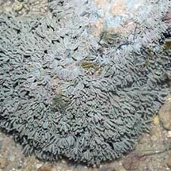 St. John's Island, Aug 05 |
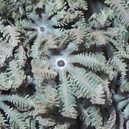 Polyps do not retract completely. |
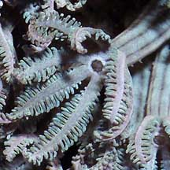 |
|
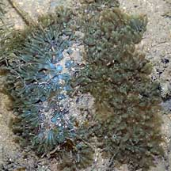 Sisters Islands, Jan 07 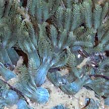 |
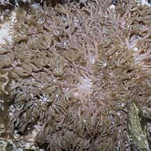 Terumbu Pempang Tengah, May 11 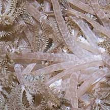 |
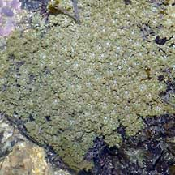 Sisters Islands, Jul 04 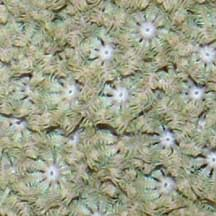 |
*Species are difficult to positively identify without close examination.
On this website, they are grouped by external features for convenience of display
| Broad feathery soft corals on Singapore shores |
On wildsingapore
flickr
|
| Other sightings on Singapore shores |
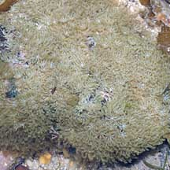 Pulau Biola, Dec 09 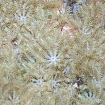 |
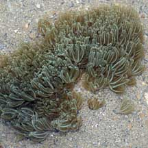 Terumbu Berkas, Jan 10 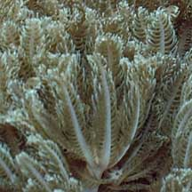 |
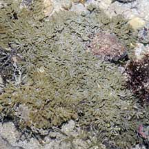 Pulau Pawai, Dec 09 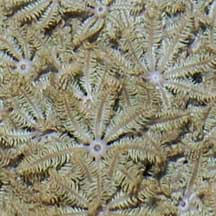 |
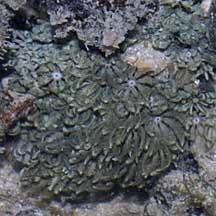 Pulau Senang, Jun 10 |
|
Links
References
|